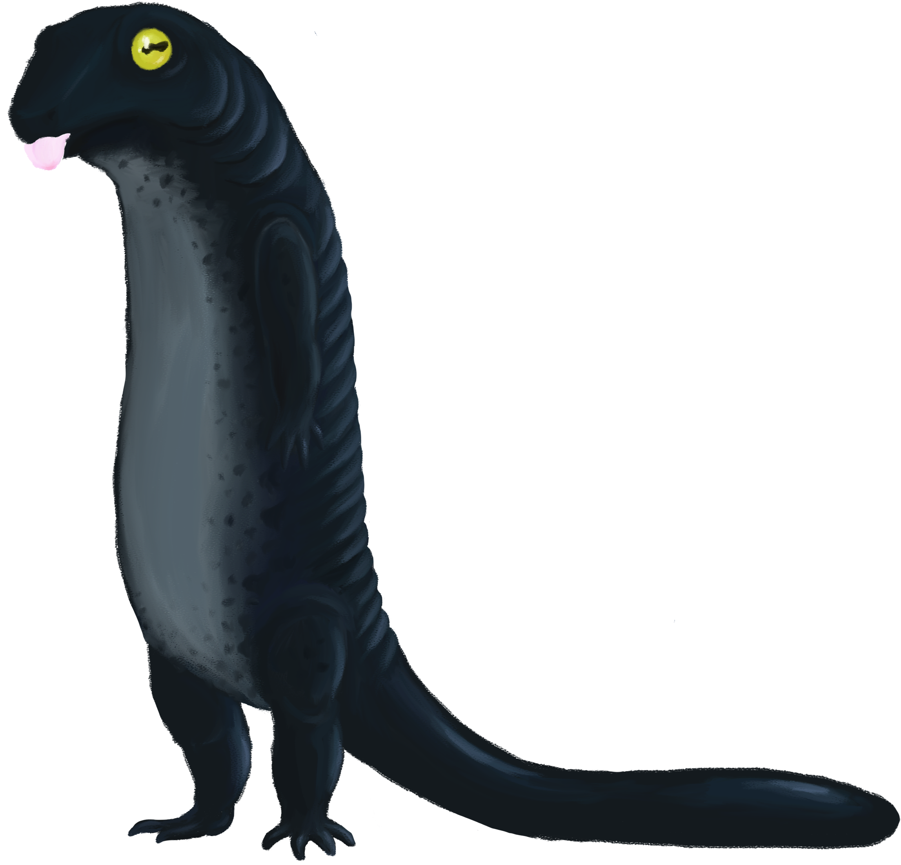

Aeleeri
Origin

Aeleer Maidens are disciples of the Sun Goddess Aeleer. They perform many duties around their places of worship, arguably the most important being the delivery of Aeleeri children. Aeleeri are created when a child is born in a shrine to Aeleer, delivered, baptised, and blessed by one such Maiden. From there they are raised by the church; they are educated, trained in combat, and taught to help others among other things. They are raised to be paragons to people. The Aeleeri can come from any race and as such they contribute to every society. As always, there are some Aeleeri that reject this path and take that of the radical...
Behavior in Enviornment
Aeleeri noble and respectable beings wherever they may roam. Regardless of whether they are a merchant, backsmith, priest, maiden, or warrior they are someone that draw admiration from many. Aeleeri typically take to a life of peaceful life, concerned with nothing more than helping one another. There are many who hear the call to arms, and answer without hesitation becoming heroic templars for good. The few who find themselves on darker paths are truly a danger to all regardless of whether they align with the light or the dark...
Relationship with Factions
Aeleeri have good standing relationships with most factions, their charity and good nature afford them a great level of appreciation from others. An Aeleeri community keeps its doors open to everyone, as long as they’re pure of heart. These areas are immaculate societies tolerant of almost all comers. It’s not to say that every Aeleeri is religious, or so much as lawful for that matter, but they hold a strong disposition towards all that is good. The Aeleeri are held in a high regard by all for good reason. From the monsters who fear their tenacity, stoicism, and skill all the way to the good peoples of other land who admire their compassion, charity, and acceptance.
Appearance
Aeleeri can take on many different appearances as they can come from any race or walk of life. Traits often taken on by Aeleer are golden, glowing, beautiful features. Those that have scales develop interlocking intricate patterns, while those with hair or eyes retain bright colors for their hair and eyes.
Nethian
Origin
 Long ago, during a time when the gods walked among man, Neth, the plane that lives, created creatures called Neth’s Children or Nethians. Nethians resemble hairless humans and were created for the sole purpose of gathering any and all knowledge for Neth. Most Nethians return to be absorbed by Neth and increase its knowledge of the other planes. In rare cases, however, some Nethians either forget their initial purpose or choose not to return.
Long ago, during a time when the gods walked among man, Neth, the plane that lives, created creatures called Neth’s Children or Nethians. Nethians resemble hairless humans and were created for the sole purpose of gathering any and all knowledge for Neth. Most Nethians return to be absorbed by Neth and increase its knowledge of the other planes. In rare cases, however, some Nethians either forget their initial purpose or choose not to return.
Having no real place to call home, Nethians that choose not to return to Neth often find places among humans to live their lives. As lovers of knowledge some try to blend into society to become scholars or researchers. Others, in contrast, isolate themselves from society to focus on learning. In both situations though, Nethians are eager to learn anything they can about the world around them. Their willingness to learn makes it easy for them to fit in almost anywhere with little difficulty. Most Nethians who inhabit Blackwell are there to discover the mysteries surrounding it. Whether the reason is to gather such information for Neth or simply if it’s a need to learn more varies from each Nethian.
Behavior in Enviornment
Nethians always strive to learn and gather knowledge, it was the one thing that Neth made them for and even after being free of his control this need is still there. Nethians have spent their lives learning and are proficient in Nature and History. Having been created in the Plane of Neth the Nethians have learned how to disguise themselves to seem human-like. Due to their need to learn Nethians know how to survive in any environment. Nethians know how to create small traps to get animals for food. Nethians also know how to make small shelters to survive any monster threats.
Relationship with Factions
Most Nethian’s are chaotic, believing that the order of control that they served under Neth was detrimental to society. They tend toward Neutral as they feel that both sides of every story will determine who is right and who is wrong. Nethians have neutral relations with most races since they are only interested in knowledge. Most Nethians try to learn about the Aeleeri goddess and the religion, but they don’t particularly care about helping others with the teachings of the Aeleeri. Nethians will also usually deny being in parties since they don’t care about money or fame. If the parties’ goals align with the Nethian’s goals then the Nethian may consider joining a party. If the parties travels will take them near a temple or church that the Nethian is traveling to for instance, then the Nethian will consider joining. However, once the party gets near the temple then the Nethian will typically part ways and venture onward in a new direction.
Salamander

Slimy Omnivores. The Salamanders are a tunneling race that rely heavily on hand to hand combat. Although they do use simple weapons from time to time. They also utilise a technique where they trap their prey in a bubble and use their poisonous excretions to fill the bubble with a potent toxin, killing the victim trapped within the bubble. Diet consists on anything that they can find. Their advanced toxin filtering system allows them to consume virtually anything without any risks.
Origin
The cold, moist dirt of an old growth leafy forest is where you’ll most likely find these oversized amphibians, although some may be found at the bottom of muck filled ponds, and are given the less desirable name of Newts. Life for many revolves around digging, creating new tunnels and caverns, and collecting whatever treasures they may come across. Seeing one in a town or village would be a rare site, but there have been a few that try to take part in society.
It’s not clear on how Salamanders came about, as they have no written history and oral history is mostly on what type of bugs can be found at different points of the year, but it’s thought that they were an experiment gone wrong by a Wizard that couldn’t bring themselves to kill the poor human like creatures, so they were set free. The first sightings written by other species date back about 150 years ago, and it’s unknown how many there may be in the world, but there’s a documented group of about 80 living within the same tunnel systems.
Behavior in Enviornment
What research has been done on them has given little insight to their ways of life. When asked about their life span answers ranged from 40 on average to the oldest in the group claiming to be 124 (but it was noted that the interviewer had their doubts). There appeared to be no formal hierarchy, but when in doubt they would turn to the eldest or most knowledgeable for guidance. Impressively enough, it seemed many had magic abilities, and were skilled in alchemy, especially medicinal. This was largely due to their ability to secrete a sticky substance from their skin, which originally was to help dispose of toxins from the bugs, fungi, and decomposing matter that they consumed, but turned into a useful way to make concentrated potions and poisons.
Relationship with Factions
The salamanders are often befriended by the various good alignment sided factions for their potions in exchange for food. On the other hand they are sought after from the evil aligned factions to be enslaved for the mass production of slimy toxins and potions. Essentially they are farmed for it against their will. It is a common practice among the Shades, specifically.
Appearance
Salamanders are one of the more built specimens of blackwell. They average around 5 feet tall not counting the length of their tails. They have unique spots and stripes and can range in almost all the colors of the known spectrum, though they mostly are warmer colors like brown, yellow and red. Their average life span is about 40 years but some can live to extreme numbers in the 100’s
Aleer
Religious Aesthetic
The churches to Aeleer are grand cathedrals to the Sun Goddess. Each church has some form of hospital to aid and assist members of the convent. The church also typically has living quarters for the less fortunate to stay. These grand places of worship are usually constructed from gold, marble, or other materials of high quality and value. The Aeleer followers themselves tend to look very beautiful with long, silky blond or white hair. They lean towards being more tall and slender in build. Their clothes are usually vibrant in color and modest in design.
Description of Followers
The youth in the church are instructed from communion to learn proper etiquette. This includes learning how to sew, cook, dine, perform, and read. The church itself is charitable to the extreme; they do all they can to spread good faith in Aeleer. Due to this the Aeleer faithful often feed those in need, house the sick or elderly, clothe the less fortunate, and take in Blackwell’s numerous huddled masses. However the duty held most sacred is that of the Aeleer Maidens. The Maidens are leaders of the convents, preachers of Aeleer’s gospel, and most importantly they are the medium for the Aeleeri. It is this last responsibility that puts the Maidens in the highest regard, they literally deliver a manifestation of their Goddess’s will.
Description of the Goddess
The God Aeleer is compassionate and caring to those who are good, truly good, at their core. While she may be a warm and caring deity she is also capable of unleashing wrath and fury unlike any other onto those who aren’t so good natured. Just as the sun outshines the rest of the stars in the sky so too does Aeleer love being the center of attention to the point that she is vain and arrogant. She thinks so highly of herself that she doesn’t bother to wear armor or use weapons. As such she appears to be a serene maiden to onlookers that is motherly and approachable, when she isn’t scorching the impure from the realm of the living that is. When Aeleer roamed the Earth it wasn’t uncommon for solar storms to rage across the land. These solar storms would purge the world and the Cosmic Perpetual of any evil in her presence. These storms encapsulate everything that is Aeleer, beautiful, loving in a way, but destructive.
Vrask
"What a nice night for a walk, would you mind if i join you? Do what I want? Well that's great because i’m going to. And not to annoy but i really must ask, what is a nice fellow like you doing in this part of the land? What’s this, you don’t appreciate the horrors of blackwell? Well slow your tongue , and listen carefully for nothing that you’ve seen quite comes close to me, I can show you something to paint all your dreams haunted, I can make your scream if i wanted… Or I could be the string in your bonnet, your best friend forever, we could be two peas in a pod, same birds of a feather. If your willing to play, i’ll make your pain just fly away. Just say these words and we’ll be on our way.”
--Vrask the Charlatan God of Mischief
“I partake in this Trickster’s oath, not for greed and not to boast, but for mischief that i have wrought, in the name of Vrask the Droll”
Religious Aesthetic
Vrask the god of mischief truly loves one thing. Faires. The foggy city of Nihilgoth resides on the Northern tip of Blackwell’s central region. Half of the city looks like a ghost town, with its only inhabitants being bumbling oafs and maniacs laughing at the foolishness of all those that enter the city without the blessing of their patron god. Past the dilapidated buildings and pristine but ultimately unlit churches lies the only source of light and life in the city. The Circus of Souls, where the wretches come to revel as babes before submitting their life in the name of Vrask. In the Circus grounds, there are two building worthy of note. The tavern simply named “A Little Piece of Heaven” and Vrask’s personal quarters named “The Ninth Circle”. What purpose do these building serve? Only those called upon by Vrask know.
Description of Followers
Followers of the Charlatan God don’t share a common appearance. Anyone can follow Vrask and can believe anything to be signs of his communion. As Vrask is known to walk among the mortals, changing shape and mannerisms as they see fit, usually those that follow them have encountered Vrask in some way. Anything from a cat, eyeing warily as it catches its prey, to a promiscuous bar maiden, that was willing after a night of revelry. Vrask knows no bounds, neither do his faithful.
Description of the Deity
Vrask the Droll, as they so proudly named themself. Is the God of Discord and Chaos native to the realm of Blackwell. Walking among mortals, they seek the thrills any being does. Vrask themself is a shapechanger, not favoring any particular form, although tales say that they don’t remember what their original form was. Eccentric and curious, they follow the flow of the wind, looking for things that intrigue them and leaving a trail of chaos in their wake. Ranging from passionate to petty, this god is widely known for their bi-polar nature. They’d give you all the riches of the world just as soon as he would plague the town with locust and bats. Once when Vrask heard that the Churches of Aeleer and those of Morne each had their own huntsman covens, they decided to choose people and form their own. Simply out of not wanting to be left out and ensuring that the other gods don’t forget their presence, they would make their hunters deranged killers so that they would not be ignored. Vrask loves the spotlight and demands constant attention.
Morne
Religious Aesthetic
The cathedrals of Morne are gothic in appearance. While often spacious, they are ultimately abandoned. Only the most devout of followers even attempt to pray to their patron god. This is the reason most of Morne’s cathedrals are in a state of disrepair. Some are even left in Ruins, as the Night Haunters coven have made it their goal to destroy all but one of the cathedrals. Those Cathedrals that are still intact have a uniform style to them. Dark blues, blacks, and purples decorate these halls. Statues of raven, rat, and strange bat creatures loom over the makeshift pews.
Description of Followers
The Children of Morne are an inconspicuous group that are loyal to their fallen god. No sacrifice is rotten enough to them if it is for the sake of resurrecting Morne. Their activities can range from practicing the dark magical arts to kidnapping the citizens of Blackwell for occult rituals. They reside in cave-like structures but occasionally relocate to other uninhabited regions of Blackwell.
Description of the Goddess
Morne is a more mysterious deity compared to his counterparts. Feared by most of the common folk, Morne is thought of as a prime evil in Blackwell; and that is truly saying something. Many believe that Morne brings naught but ruin and despair unto those unwilling to serve him. Alas, this is far from the truth. Although never stating a clear intention, Morne never punishes without reason. All events that show him interfering with the lives of regular mortals always reveal a second purpose upon closer observation. He once set a murder of crows to gouge the eyes from the housefather of an orphanage. The man was revered by all as one of the kindest folk in the town. After his death it was made apparent that he was selling the children of his orphanage to anyone with enough coin to sling around. Such is the way of Morne. Always working from the shadows and never truly showing his hand. Perhaps even to this day...
Huntsman
 “Ah, fancy yourself a huntsman do you? What is it that brought you here? The thrill of the hunt? The glory? Or is it something… more sinister in nature? The life of a huntsman is not for the weak of heart. You will be ostracized by those that do not believe in your cause, whether righteous in intent or vile as the cursed beasts you slay. As a huntsman you are destined to live for the hunt, and die for the hunt. Whatever your cause, whatever your purpose, it matters not. This land of grime and sin, it is the perfect place… *Cough*... For a hunt. You will have to be a skilled huntsman, adept, merciless. Coat yourself in blood, and end the life of these wretched beasts. Now go. Leave with your wits about you. For the night is young, and Hunt has just begun.”
“Ah, fancy yourself a huntsman do you? What is it that brought you here? The thrill of the hunt? The glory? Or is it something… more sinister in nature? The life of a huntsman is not for the weak of heart. You will be ostracized by those that do not believe in your cause, whether righteous in intent or vile as the cursed beasts you slay. As a huntsman you are destined to live for the hunt, and die for the hunt. Whatever your cause, whatever your purpose, it matters not. This land of grime and sin, it is the perfect place… *Cough*... For a hunt. You will have to be a skilled huntsman, adept, merciless. Coat yourself in blood, and end the life of these wretched beasts. Now go. Leave with your wits about you. For the night is young, and Hunt has just begun.”
-Grimholdt, The First Huntsman
Origins
Originally known as the Hunters of Aeleer, the Huntsman hand picked by Aeleer were sent unto the world to hunt those she deemed unworthy of life. Any signs of heresy were to be expunged by these holy inquisitors in the name of their God. Among these hunters was the first huntsman, Grimholdt. Grimholdt sought audience with the Goddess Aeleer in an attempt to rid the world of this bastion of heresy. Aeleer would grant Grimholdt visions of the future that would shake his belief and cause him to betray his coven. Grimholdt, along with those loyal to him, would break off and form the Night Haunters Coven. The Night Haunters, being blessed with longevity by Aeleer, would dedicate themselves to hunting the beasts of Blackwell and followers of Morne. Wars between the two covens were so commonplace in the early days of Blackwell, the common folk were inspired and sought to change their oppressed lives and began to follow them, idolizing these opposing forces and wanting to join. Now that the Goddess is gone and the Huntsman wars have ceased, the line between the forces have been blurred, huntsman of varying backgrounds have surfaced.
Behaviour In Environment
Blackwell provides plenty of prey for the Huntsman, the overabundance of beasts drawing them in. Relishing in the thrill of the hunt, Huntsman lie in wait for the wretched beasts they so desire. To some, Blackwell would seem to be a bastion of desolation and death. But to the true Huntsman it is a playground. Hunting beasts is such a gratification to a proud Huntsman that most would give up food for the thrill of the hunt. But to some their are bigger prey. Huntsman that hunt more intelligent beings. Huntter of the Huntsman seek nothing more but to waste the life of fellow Huntsman. Bordering on mania, these so called hunters achieve levels of ecstasy upon the waste of life that they leave in their path. It is a dangerous and solemn life huntsman live, as any day can be their last.
Relationship with Factions
Huntsman baring the sigil of the Night Haunters are revered by the church of Aeleer. Any believer of Aeleer will treat them with utmost respect and admiration as they are “chosen by the Goddess”. The sigil demands such authority that Aeleer faithful would lay their lives down for their Huntsman. Those bearing the mark of Morne are hated by the church of Aeleer. Any of Aeleer’s faithful will be immediately hostile upon viewing this mark, Followers of Morne will blindly follow orders from the Hunters of Aeleer much like the Aeleer faithful do for the Night Haunters. They’re universally disliked Huntsman type are the Hunters of Huntsman. Bearing the brand of Vrask, they represent the depths of madness that mortals are capable of. Entire towns have been eliminated by Huntsman of this type, leading the commonfolk to be weary of this breed of huntsman. Only madness and destruction are left in the wake of these wretches.
Lyco-Fiend
Lyco-Fiends are individuals with the gift of harnessing the power of their beast hood at will.
Origins
There are a line of individuals who have a curse bestowed on them. This curse is a by product of Blackwell’s creeping darkness. When the parents’ hearts are full of malice the darkness of Blackwell imbeds itself into the child. This curse manifests the fear and anger inside the individual and once the cursed person reaches maturity, the demon inside has reached its full power. The cursed individuals can communicate with their demons and call them into the living realm. The demons then take over their host’s body and unleash all their anger and frustration on anything in sight. In their demon form, they are unmatched in strength and ferocity.
Behaviour In Environment
They are generally neutral to most who come across their path. Although they will slaughter those who do intend to attack. Wary of communication to travellers due to their uncontrollable monstrous forms. Will only resort to their beastly form when pushed to a corner or when they are on the brink of losing their sanity, never to revert back into their original form until death.
Relationship with Factions
Mainly tied to the Children of Morne in hopes of reviving their god so that the followers are relieved of the curse. This particular class is shunned upon by the other factions. Due to their cursed nature, they are regarded as impure misfits.
Sanguine Tracker
“If you fancy yourself a Sanguine Tracker then you must be prepared to kill anyone and everyone. This path is not for those faint of heart but for those who desire power.”
- Dedrick the first Sanguine Tracker
Origins
The first Sanguine Tracker was created when Dedrick, a High Elf Aeleeri, strayed from the teachings of Aeleer and began immersing himself in learning dark magic, magic that is shunned and considered taboo by the Aeleer faithful. He dabbled in secret for months, exploring the depths of power behind such magic and writing down his findings within a journal. Eventually the church of Aeleer discovered what he was doing and took Dedric to the High Priestess. The Priestess cursed Dedrick to be a monster that could only survive by feeding on the life essence of other creatures. Later, other people discovered his journal and learning to wield this power as well, which has come under the name of Blood Magic.
Behaviour In Environment. The trackers are good at tracking down their prey and disguising themselves. Since they are able to hide incredibly well in the environment they are able to sneak into a nest of a wild creature. Normal Sanguine Trackers will mostly hunt to kill the creature to drain it of blood, so they could use the blood for their spells. More experienced trackers will often capture the creatures they hunt to drain them of their blood more efficiently.
Behaviour In Environment
The Sanguine Trackers will work together on hunts with the Huntsman due to both classes as many view Sanguine Trackers as “fighting fire with fire.” There are a few radical Huntsman who would welcome such an ally along on a hunt. When a Sanguine Tracker is a member of the church of Aeleeri they are often frowned upon due to using heretical magic that is inherently dark. When they are a part of the church of Morne they fit in well due to their ability to wield the inherently dark blood magic. They are usually viewed with high regard within the ranks of Morne due to this as well as their ability to track the creatures that plague the land. Sanguine Trackers that are a part of the church of Vrask act upon their own unpredictable and erratic wants. They have been known to disregard the needs of others to do as they want with complete disregard for others around them.
Relationship with Factions
The height and weight of a Tracker depends on what race that the Tracker belongs to. The gear that the Trackers will wear needs to offer good protection, and also needs to be a little loose to offer mobility in the field. A Tracker will usually have a sword attached to their hip, which will typically be accompanied by a glove with claws attached.
Nithil
Origins
The corruption of Blackwell has created these abominations of the Bog. Humanoid in appearance and animalistic in nature, They prey on the huge amphibious creatures of their environment and are known for making use of whatever is inhabited on their land such as layers of crab shell for light armor, turtle shells for heavy armor and moss traps on the shore for intruders and prey.
Behaviour In Environment
The vast marshes and bogs throughout all of Blackwell provide the Nithils with a home virtually wherever they go. They are an incredibly resourceful people, they use everything around the festering swap as a form of weapon. They are territorial in nature and will aggressively seek out those who target their eggs; which are known for being a valuable delicacy in Blackwell.
Relationship with Factions
The Vraskians constantly intrude the Nithils territory for their valuable eggs so they are not on good terms. Due to the Nithils extreme territorial nature and the lack of need to leave their swamps mean they have stayed as a very independent unit through the history of blackwell. The lack of leaving the swamp means they never became integrated with any factions of Blackwell.
Appearance
They can vary in appearance from having more human like features with small fish like components(small dorsal fins, webbed appendages and sharpened teeth) to some members of the species looking much more animalistic(embodying their animals that they are based off of, think pirates of the caribbean davy jones crew). The average lifespan of a Nithil is 40-65 years and they lay 2-3 eggs per month. They average around 6 feet in height and weigh about 125 lbs.
Symbiote

Origins
Symbiotes are rumored to have originate in the deepest regions of Blackwell. Word of mouth among the travellers and denizens of the region had figured that it resides among the darker areas and mostly come out when it’s dark. The hosts that these creatures take over bypass this curfew.
Behaviour In Environment
Symbiote’s strive to find a strong host to take over, so when looking for suitable prey they typically search for them based on their acute sense for blood. Once it tastes the hosts blood and determines its prospective strength it will forcefully try to hunt them down and take over their body. Once the Symbiote has successfully infested this creature they will still retain control of their body to a certain degree. The infected individual will begin to deviate from their home due to the desires of the Symbiote such as finding prey to consume for more strength. The Symbiote will not hesitate to abandon its current host when encountering a stronger being.
Relationship with Factions
The Aeleer will not tolerate the existence of this race due to the goddess’s treatments to impure beings. The Morne religion is quite welcome to the Symbiotes efforts among Blackwell. The Vraskians aren’t concerned about the Symbiotes due to their unknown and unbound beliefs.
Appearance
They appear as a sticky and thick black substance that envelopes any creature that it chooses no matter how big or small it may be.
Shade
Origins
The Shades came to Blackwell on the realization that their particular skill sets would allow them to flourish here. They rely heavily on the practices of stealth and deception to survive in this hostile environment. They also carry a unique trait to the inhabitants of Blackwell, they are able to summon spectral weapons, allowing them to adapt to virtually any situation they find themselves in. The Apex nocturnal predator, anyone who finds themselves better suited to the dark, may find themselves adapting to the life of a Shade.
Behaviour In Environment
The shades are mainly introverted amongst the civilians of Blackwell. Whenever they are on a hunt, their attention will remain focused on the task at hand and may not be interrupted. They will make an effort to remain hidden from people, other than their companions, to not cause issues for the hunt.
Relationship with Factions
The Shades are independent of any faction but are free to choose any of which to be aligned with. They are not hated among any of the factions, in fact they are truly welcome into all the factions of Blackwell because of their specific skill set. They can help any faction to accomplish some of the more... delicate tasks.
Appearance
The Shades favor any clothing that makes themselves easier to conceal. Preferably Black. Favoring their fast movement they usually choose clothing that is lighter in weight, avoiding heavy armors as that would slow them down and give audio cues to their whereabouts. Their clothing also typically has many small pockets to conceal their many smaller weapons that they rather not advertise to the general public.
Stitcher

Origins
These Necromancers originate from traveling arcane scholars looking to research the mysterious energies of Blackwell. When delving deeper into the its ominous center, many were quickly and totally corrupted in both mind and body. This eventually caused them to perform dark and inhuman practices of sorcery. Over the years this craft has been perfected into the Stitcher’s as we know them today.
Behaviour In Environment
Stitchers are morally apathetic. They show no concern for others unless it directly benefits them for whatever selfish plots or schemes they have in store. When coming across any home to corpses; be it a forgotten battlefield, graveyard, or any other such morbid place, be wary for Stitchers roaming the area. Nothing brings the collectors of the dead faster than fresh corpses to experiment on. Interrupting their practices is known to be a truly unpleasant experience.
Relationship with Factions
Stitchers are shunned by nearly every person within Blackwell. Their lack of reverence for the dead is off putting for many. Their constant experiments, strange physical quirks, and pungent odor are no help either. That being said Stitcher’s are not unknown to exist in every faction of Blackwell. While the Aeleer faithful don’t condone any practice of the enigmatic Stitchers the less malicious of the Necromancer’s ranks are welcome into their cities and convents. Vraskians hold no inhibitions or prejudice towards anyone, welcoming any and all comers. The Children of Morne are some of the few who encourage Stitchers, their constant goal of reviving their fallen god has led them to seeing Stitcher’s less as monstrous beings of arcane science and more as shepherds and heralds of Morne’s return.
Appearance
The Stitchers have a palish blue skin tone and sturdy humanoid bodies. This is a result of their constant practice of replacing their decaying and rotting parts with those of more fresh “donors.” Most of the Stitcher’s familiars have unrecognizable features. Some of the parts that the Stitchers incorporate into their familiar’s body don’t integrate well and result in the preemptive rotting of flesh on the familiar. The Stitcher’s face has seen a great deal of twisted and corrupt experiments; there is truly no remorse in their gaze.